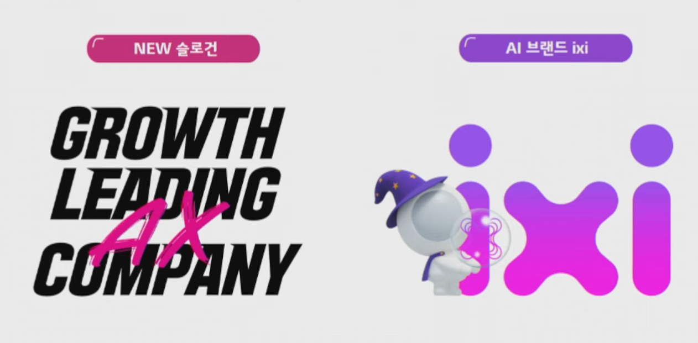
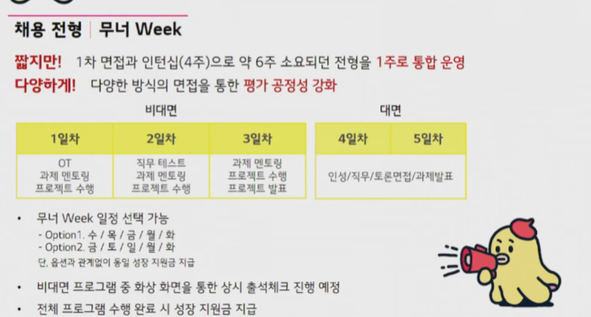

Intro
1 텔레콤, 데이콤, 파워콤 3사가 유 무선 분야에서 통신 역량을 쌓아온 시기
2 탄생 : 3사 합병과 함께 LTE와 5G를 기반으로 도약
3 도전 : 고객 중심 플랫폼과 AI 기술로 성장을 이끄는 U+ 3.0시대
4 또한, 올해 새로운 슬로건을 만듬!
5 통신 이외에도 너겟, 포동 등 다양한 서비스를 제공
너겟 : 정해진 약정 없이 쓰고 싶은 만큼만 요금제를 설정할 수 있음
포동 : 반려견을 위한 종합 펫 서비스 플랫폼 \(\to\) 반려인들을 위한 커뮤니티 서비스 제공(여행, 양육 등)
STUDIO X+U : 예능부터 드라마까지 각양각색의 콘텐츠 제작
스포키 : 국내외 각종 스포츠 라이브 중계 및 하이라이트 중계
아이들 나라 : 독서/학습/놀이 등 다양한 키즈 전용 청정 콘텐츠로 아이들의 성장을 돋는 플랫폼
우리가게패키지 : 매장에서 이용할 수 있는 모든 상품을 결합한 소상공인 전용 통신 패키지
화물잇고 : 최적의 화물배차, 전용 내비 등을 제공하는 화물 운송 중개 플랫폼

IXI 소개
1 ixi 챗봇
2 AI추천 by ixi : 고객에게 적합한 콘텐츠와 요금제를 추천
3 AI 승부예측 : 스포키에서 제공
4 AICC : AI기술을 기반으로 고객센터를 좀더 고도화
5 IXI O : AI 통화비서 어플, 전화를 대신 받아주고 보이스피싱 탐지까지(출시 예정)
채용전형
1 LG Essay(오후) : 직무 관련 학습한 것들을 복기(10월 27일, 인적성 검사(오전)와 함꼐)
내 생각과 문서 구조화 역량을 살펴본다.
데이터분석 직무는 코딩테스트를 보지 않음.
한글 작성
2 무너 week 참고
합숙 진행은 없다. 그러나 팀 프로젝트 과제
멘토분과 과제 진행, 이것을 바탕으로 대면 면접 진행(인성/직무/토론면접/과제발표)
최저시급보다 더 많은 돈을 준다.

3 자소서(400~500자)
- 내 경험들을 함축하는 능력도 포함해서 보기 때문에 경험을 잘 녹여내자
4 사내 교육 프로그램이나 커리어 개발을 위한 지원이 있음
5 현장실습은 경력으로 할 수 있지만…. 그냥 대외활동으로 하자.
직무 인터뷰
1. 데이터 분석
1 고객 경험 혁신에 기여할 수 있는 활동 기획/실행 & 데이터를 기반으로 회사의 성장 전략 도출
고객 경험 혁신을 위한 고객 개인화 업무 : 메시지 자동 생성
데이터/AI 기반으로 회사가 성장할 수 있도록 돕는 분석 업무 : 챗봇, 보고서 자동 작성 모델링 수행
고객 세그멘테이션, 탐색적 분석 등등
2 필요한 역량
수치 기반 문제 해결 역량툴을 활용한 분석 역량 : 데이터 전처리, 모델 개발 역량 \(\to\) SQL, Python 등
지속적인 전문성 추구 : AI 기반 학습 뿐만 아니라 다양항 분야의 트렌드를 학습할 수 있는 역량
3 최근 보람있던 업무
코드 작업없이 분석 리포트를 작성할 수 있는 모델을 개발한 프로젝트
사용자들을 대상으로 설문조사 실행 결과 만족도가 굉장히 높았음
4 업무에 사용되는 데이터 분석 tool
전처리 : SQL
추가 작업 R, python
5 실무에서 주로 다루은 데이터와 주요 프로젝트
비즈니스 기반 정형 데이터(모바일), 비정형 데이터(고객들이 남기신 데이터)
주요 프로젝트 : 생성형 AI기반, B2C 기반 의사결정 지원을 위한 데이터 분석
2. AX 마케팅
1 AI 기술과 결합된 아이디어로 브랜딩 강화를 위한 마케팅 전략 시획/실행
- 브랜드 제휴, TBC 등
2 매력적인 이유 : 최종 트렌드를 지속 발굴, 직접 활용
가장 트렌디하고 전사 기여도가 가장 높은 직무
최근 다양한 업무에 AI기숧을 활용한 차별화된 경험을 고객들에게 제공
필요 역량 : 최신 트렌드에 대한 뾰족한 시각, 커뮤니케이션 역량, 경쟁사들이 어떻게 브랜드를 만들어 가는지, 다양한 미디어에 대한 관심
3 최근 업무
국내 최초로 100% AI로 AX company 홍보 영상을 만듬.
30초 영상을 마들기 위해 20만개 프레임을 생성했지만 쓸만한 것은 720개 밖에 되지 않았음.
4 AX 마케팅 직무와 일반 마케팅 직무 차이점
유플러스가 지금 전사 업무를 AI로 대체 하고 있음
AI를 활용해서 콘텐츠를 만든다는 것에서 차이점이 있다.
AI 활용 툴을 잘 다루는 마케팅 직무이다.
AI 관련 개발 역량이 필요한가? \(\to\) 개발 수준 보다는, 개발자들과 소통하기 위한 이해도가 필요하다.